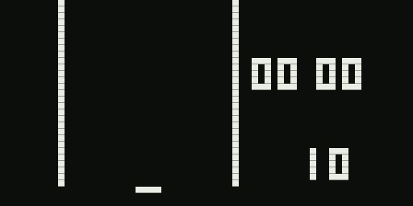
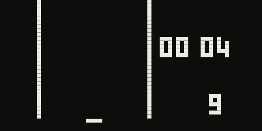
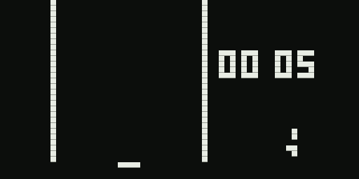

Time Squash
Arthur Hand · DREAMER no. 16 (1981-12) p. 7 1K RAM



A squash game: keep ten balls in play for as long as you can with a racquet at the bottom. A timer on the right shows how long and the balls left appear under it. After ten minutes the timer wraps to 00:00.
Keys
4 left, 6 right, any key starts.
Files
| File | Version | Load | Run |
|---|---|---|---|
| Time Squash.c8 | main | 0200-03C3 | C000 |
Listing as transcribed (with notes): time_squash.txt
Source
DREAMER no. 16 on archive.org, p. 7 (PDF page 9). Author: Arthur Hand.
Corrections applied
None.
Open doubts
- The erratum printed below the listing belongs to Slide (issue 11).